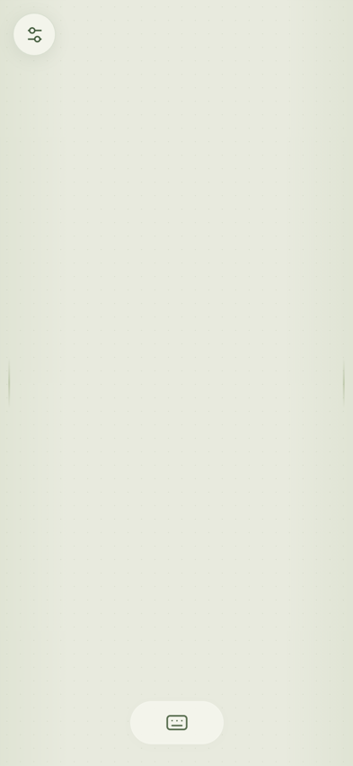
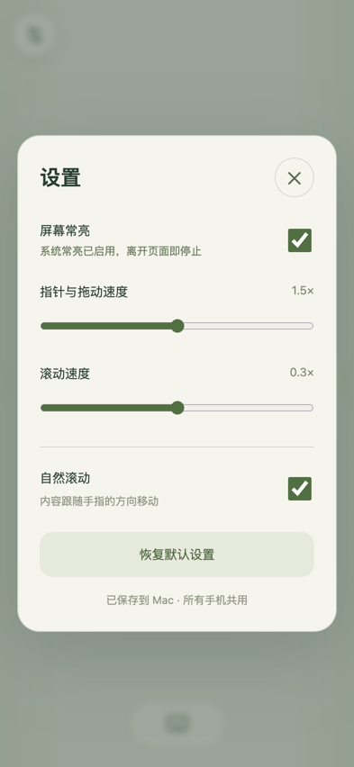
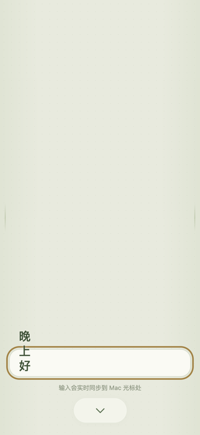

整屏触控
单指移动／点击／双击，双指右击与滚动，三指拖动；长按约半秒右击，轻点一次后按住稍停再滑动就是按住拖动。



单指移动／点击／双击，双指右击与滚动，三指拖动；长按约半秒右击，轻点一次后按住稍停再滑动就是按住拖动。
左右各 28 px 窄条落指即滚动；其外与渐隐提示等宽的 76 px 判定带里，纵向滑动同样滚动，横向滑动仍是移动指针——拇指不用刻意贴边。
“穿堂”式实时同步：手机键盘选词后字符立即出现在 Mac 光标处并从手机上消失；删除 ⌫、回车 ↵ 都即时发送一次真实按键，不经过剪贴板。
任何数量、任何设备（手机／平板／电脑）打开地址即可；同一时刻以先开始的手势为准，菜单可单独或一次性断开全部控制者。
可用时走系统 Wake Lock，局域网 HTTP 下用内置无声视频兼容保活；离开页面即停止，开关与状态都在设置里。
App 启动服务就开着，菜单栏显示固定的 .local 名字与当前 IP 两个地址；支持登录时启动，不联网、不遥测、不自动更新。
SofaPad-0.9.7.pkg，装到「应用程序」，打开它（没有窗口，只在菜单栏出现一个小图标）。http://<Mac 名>.local:9876/），看到整屏触控板即可控制。想全屏使用：Safari 里点分享 →「添加到主屏幕」。服务随 App 自动开启，不需要点“开启服务”。
| 手指动作 | 效果 |
|---|---|
| 单指移动 | 移动 Mac 指针 |
| 单指轻点／快速双击 | 左键单击／双击 |
| 单指按住约 0.5 秒 | 右键单击 |
| 双指轻点 | 右键单击 |
| 双指上下滑动 | 滚动 |
| 左右边缘 76 px 内单指上下滑 | 滚动（窄条 28 px 内落指即滚） |
| 三指滑动 | 拖动（拖窗口、选文字） |
| 轻点一次 → 按住稍停 → 滑动 | 按住拖动 |
服务只在选定的私有 IPv4 上提供明文 HTTP/WS（默认端口 9876）：局域网内任何能访问该地址的人都能控制这台 Mac，也能读取流量。请只在可信的家庭网络使用，不要映射到公网。
没有账号、配对码或证书——打开地址即可控制，这是有意的取舍。仍然保留精确的 Host／Origin 校验、同源要求、连接上限与消息大小／频率限制。